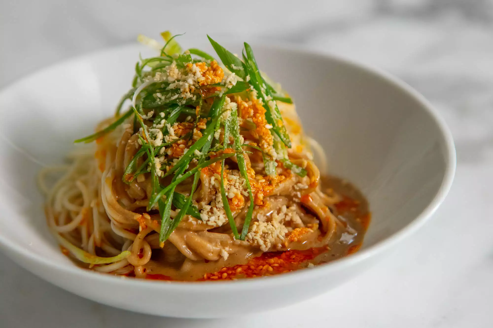

Sesame Noodles

Description
Simple, quick and easy recipe for cold sesame noodles
Ingredients
1 package fresh egg noodles
¼ cup sesame seeds
¼ cup tamari
¼ cup sesame oil
2 tablespoons Shaosing cooking wine
2 tablespoons brown sugar, or sucanat
¼ teasoon chili paste
¼ cup chopped green onions(garnish)
Steps
- Boil noodles for 30 seconds or less, drain
- Heat oil, sesame seeds, chili paste in pan on medium heat
- Whisk tamari, sesame paste, cooking wine and sugar
- Turn off heat. Add noodles to hot oil. Then whisked sesame sauce and mix
- Garnish with green onions